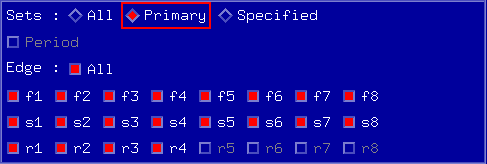

Timing Options
- Select which timing sets you want in your test.
If you want to specify individual sets rather than All or Primary, click Specified and a selection field similar to that in the figure below appears.
- From the list of timing sets highlight the ones you want to use.Note Independent from your selection, only those timing sets will be used that are actually used in the vector pattern (either as primaries or by changing sets using the sequencer command CTIM).
- Select which edges you want to use.
For Smart Scale card pins:
- If you select the Use fast/slow edge selection checkbox in the Edge Mode Setting window, fast and slow edges are displayed.

- If you clear the Use fast/slow edge selection checkbox, drive edges are displayed instead of fast and slow edges. Selecting a drive edge is equivalent to selecting both fast and slow edges simultaneously.
- If you select the Use fast/slow edge selection checkbox in the Edge Mode Setting window, fast and slow edges are displayed.
Thus you have selected the timing options for the chosen pins. When you select other pins, the edge selection keeps unchanged.
Functional changes
- Introduced before SmarTest 6.3.2
- SmarTest 6.5.3: The edge selection keeps unchanged when you select other pins.
- SmarTest 7.0.1: For Pin Scale 9G pins, fast and slow edges can be displayed in the Time Options.